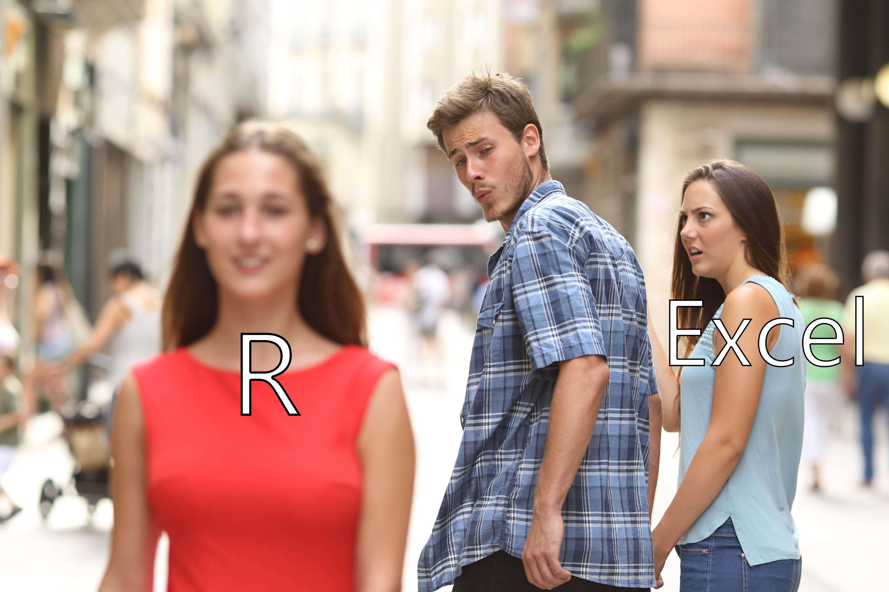

首先用一句黄天元博士的口号作为开头：
Use R to change the world.
R真的这么强大吗？不管它有没有言过其实，我想我们一开始应该选择相信它（R）。如果从一开始对它就不抱有太大的期待，那我们可能也很难有足够的兴趣和动力去进一步了解它的美好与魅力。
那么，画个饼。
经过近些年的发展，R所涉及的方面已经很完备。早已不仅仅局限于大家最熟知的统计分析与作图（数据可视化）这两大块
除此外，R在数据科学领域开创了一片天地，使得各种数据高效处理；它可以，设计实验、地理空间数据分析、机器学习、数据爬取；R还可以用于写在线电子书、制作幻灯片、搭建个人网站、制作个人简历、发邮件、办公自动化（与Office交互、操作PDF、图像处理等）
写期刊论文（写作黑魔法），各种期刊的标准模板在内，无须为字体、段落等格式担忧，而只需要专注于内容写作，你写好的稿子就是符合期刊要求的格式。
可以说，几乎每个场景都会有对应的R包。夸张些的说，只有我们想不到的，没有它做不到的。
R“无所不能”！
必须先来一剂预防针。
在入门的过程中，始终相信并不断告诉自己：R的入门比较难，但是仅限于入门。虽然这句话会带来争议，但是我们就是要克服心理障碍并给自己积极的心理暗示：“别人说，它真的没有那么难，我也可以。”。即使刚开始碰到了一时难以理解的问题，也一定告诉自己：没关系很正常，刚开始学本来就不懂，多理解几次就好了。
Use R as much as you can, even for the things you can do faster in Excel right now. (@LisaDeBruine, Twitter)
我们往往倾向于选择“容易”的东西。但我的建议是，（学R的过程中），能不用Excel就不用，尽管一些东西很容易在Excel里面搞定。2020年初刚开始接触R的时候，反复告诉自己——现在某个处理能很快用Excel做完，但是如果这个数据量非常庞大或者操作更复杂的时候，就需要在Excel里一直用鼠标点选，反反复复做相同的操作。可能光重复这一件事情就得花费两三天的时间，非常耗时并且非常容易出错。所以这种情况下选择Excel并不是一个明智的选择，那这个重复性的工作为什么不交给R呢？这是我当时最真实的心理活动，这个理由也是驱动我学习R的原因之一。包括现在也是。但是用过R之后你就会发现，自己再也不想回到Excel里面去处理数据了，理由也很简单：R，贼好用，我觉着它很方便。（并不是说Excel不行，只是我不会用或者说用不好）

R’s biggest challenge (and opportunity!) is that most R users are not programmers. This means that:
- Much of the R code you’ll see in the wild is written in haste to solve a pressing problem. As a result, code is not very elegant, fast, or easy to understand. Most users do not revise their code to address these shortcomings.
RStudio首席科学家Hadley提到，R最大的挑战就是大多数R用户都不是程序员。多数时候，我们看到的代码都是在急于解决某个问题的情况下编写的。
如果不系统性学习，我们可能会出现哪些问题？
我们可能去百度搜索、也可能会向课题组同门要来代码。然而很多时候，网上找来的代码都比较冗长、低效并且晦涩难懂（当然，有时候有些代码质量的确很好）。拿来了代码，（由于基础不好），最容易造成的后果就是：我们在不理解、看不懂的情况下，紧着代码生搬硬套、一顿瞎改，最后还是跑不通。
想在网上找关于某问题的代码，但不知道怎么正确描述这个问题，花了一天时间去搜索，还是找不到相关代码。非常低效。但其实，我们查找的问题，有可能书中已经提到并给出了最优的答案，只是我们没看。
你会发现在网上（不同网页）查到的代码怎么都一样，搬运来搬运去。即使查到了，代码质量通常比较低，往往也是很多年前的代码，已经过时。当然，也有很多有用的代码，但相对来讲都比较偏基础。如果你的问题比较复杂，那么网上可能也很难搜到（那种你想要的，用于解决你的问题的，完整的代码）。还是得明白，并没有那么多现成的。
通过网络搜索代码也解决了一些问题（有可能运行对了、也有可能是错的）。但对于这些代码仍然一知半解，只能在表面上大概看懂，或者只是跑出了一个结果，代码中很多地方都不知道是什么意思。这种情况就比较危险了，我们可能以为我们跑出来了，其实它（结果）是错的。
我们通过找来的代码解决了问题，如果结果是对的，其实已经足够了。但是有可能只是解决了某个问题，代码还是代码，代码中并没有纳入我们自己的思想、逻辑和理解。我们每次都搜代码解决问题，但却在搜的过程浪费大量的时间。用张敬信老师的话讲，浪费时间是一方面，关键是始终无法入门（始终在编程的门外），更谈不上将来的提高。
需要注意的是，花大量时间求助于搜索引擎，是每个人的必经之路（而且经常要这样做）。但是不建议刚开始就依赖于这种途径去解决问题。只有在基础语法的加持之下，我们才能在网上众多参差不齐的教程中，快速定位到真正对我们有用的东西。因为我们（借助语法）已经有一定的能力去识别代码的含义，并能正确修改其中的参数，运行得到结果。而不是不管三七二十一，拿来抓瞎，然后每一步报错。既折损效率，又不保证结果。
另外，为什么说R的难度仅限于入门呢？我想现在应该是有一定的答案了，即使不太准确。那就是基础语法，懂了语法后，很多东西都是相通的。在这之后，每看到一段代码或每解决一个问题，我们都会get到新的东西，都会有一个再理解的过程。我觉得这是才是真正积累的开始，也是质的转变的过程。你能理解它，从而把这份理解转化为了自己的东西，所以走的每一步都作数。用的越多会的越多相反，如果不谈语法硬上，更像是一个“假”积累的过程。
有一个非常矛盾的问题。很多时候，并不是不想去系统性学习，而是时间有限，没有过多（整块）时间去搞定语法。所以只能是拿来代码现场研究。这是切实存在的问题。但如果分析稍变复杂，没有现成的代码可供使用且无法编写出（额外所需）代码的情况下，路就被堵死了。
按头安利：😂 😂
仍然是那句话：不必把这个东西想的有多复杂。
Tidyverse，记住它！
学习框架很重要，而学习R语言高效的方法就是在tidyverse框架下学习。相比于基础base语法，tidyverse语法代码极其优雅、简洁。你要进行一个分析，每一步命令都是在做一个事情，并且每一步都代表了你的逻辑思维。无论是写代码还是读代码，就像看小说的情节一样，整个操作下来行云流水。
具体的书中都有详细的介绍。虽然这里只给出了前三章，但是非常够用。从头开始阅读即可（包括书序及前言）。
需要注意，部分章节，初学者理解可能较为困难或者暂时还用不到，可以先酌情跳过：
我们只有真正理解了每一步代码的含义，这样才能将其内化为自己的能力，并且这样才能保证自己实实在在知道自己做了什么事情。真正的大神都是平心静气一点一滴积累出来的。